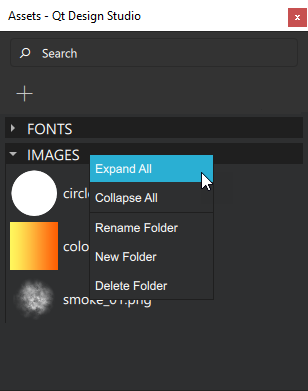

Assets
The Assets view lists available assets.
Assets displays the images and other files that you add to the project folder by dragging-and-dropping external asset files to Qt Design Studio or by selecting  . For more information about importing assets to Qt Design Studio, see Importing 2D Assets and Importing 3D Assets.
. For more information about importing assets to Qt Design Studio, see Importing 2D Assets and Importing 3D Assets.
To add assets to your UI, drag-and-drop them from Assets to the Navigator, 2D, or 3D view.
To add multiple assets to your UI simultaneously, multiselect them first by holding Ctrl and clicking the asset files you wish to select.

When you drag-and-drop assets from Assets to the Navigator or 2D view, component instances with a suitable type are automatically created for you. For example, instances of the Image component will be created for graphics files.
Context Menu Commands

To use the context menu commands in Assets, right-click the name of a folder and select one of the following commands:
- Expand All: expands all folders.
- Collapse All: collapses all folders.
- Rename Folder: prompts you to enter a new name for the folder.
- New Folder: creates a new folder.
- Delete Folder: deletes the folder.